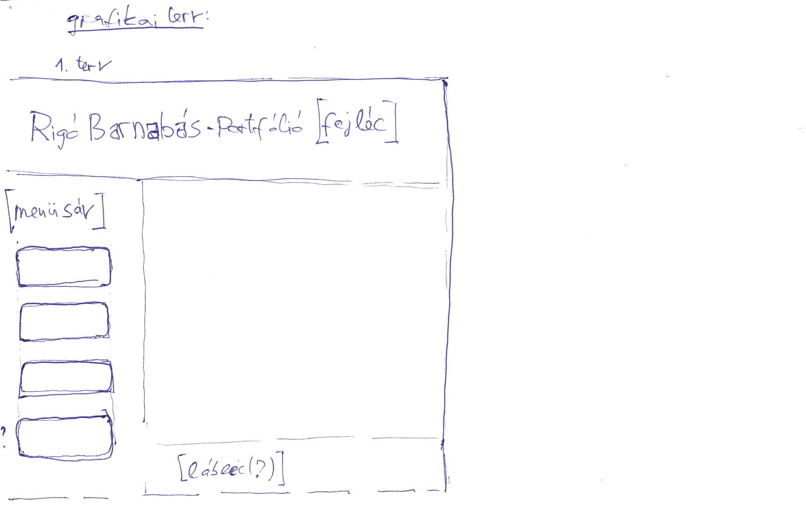
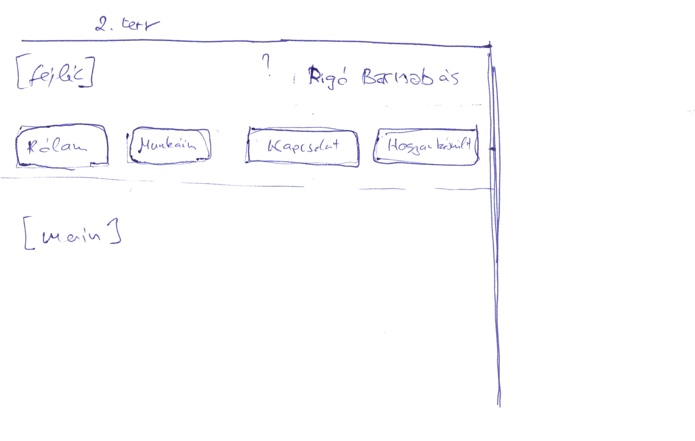
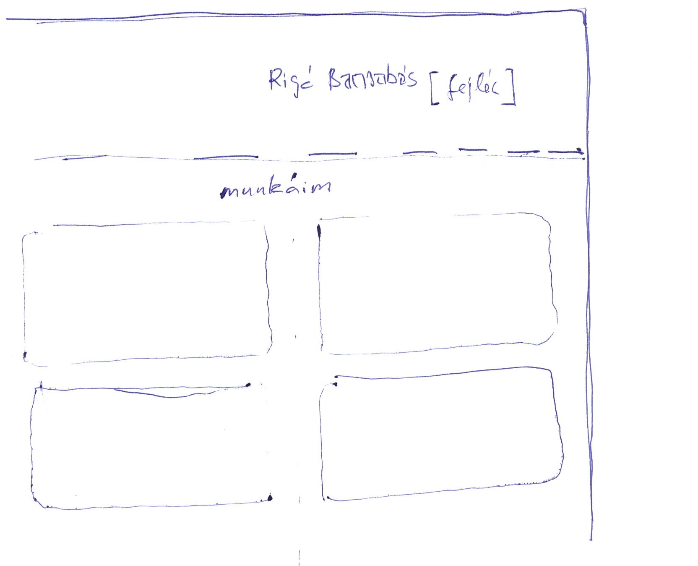
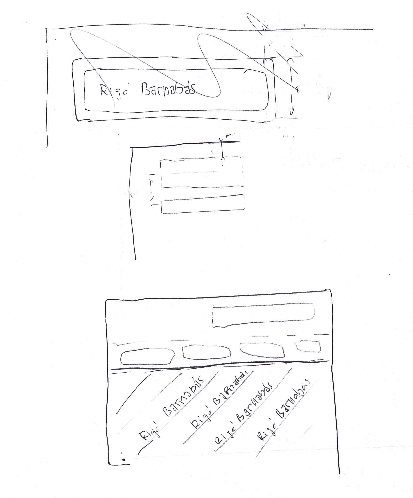

hogyan készült
Weboldal terv
Nehezen áltam neki a feladatnak, hogy elkészítsem ezt a weblapot. Grafikai, illetve rajzolási képességeimet az alábbi rajzok szemléltetik. Éppen, ezért törekedtem a letisztult design-ra, ami talán illik hozzám és nem is lehet vele nagyon mellélőni. A tervek egy részét elvettem, alakítgattam.
Kinézett szempontjából a "Munkáim" oldallal foglalkoztam a legtöbbet, próbáltam arra törekedni, hogy jól nézzen ki. Azt, hogy mi hova jöjjön milyen színű legyen közben találtam ki.




Tapasztalat
Érdekes tapasztalat volt belekostolni a weblapkészítésbe. Mivel nem volt semmi tapasztalatom HTML-el sokkal bonyolultabbnak hittem elkészíteni egy weboldat. Véleményem szerint egy ilyen oldalt elkészíteni igazából elég egyszerű, a nehézségek, akkor jöttek amikor megpróbáltam arra is figyelni hogy kinézzen valahogy.
Felhasznát weboldadalak:
-oktató videó: https://www.youtube.com/watch?v=CtrMhe5Azys&t=14454s
-html segédlet: https://www.w3schools.com/
-színkeveréshez: https://www.hexcolortool.com/
-nem nyilvános BME MOGI oktatási anyagok
Rigó Barnabás, 2021.05.16.